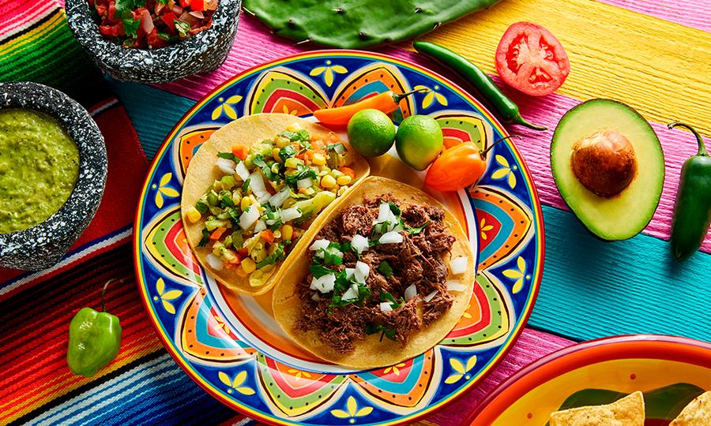
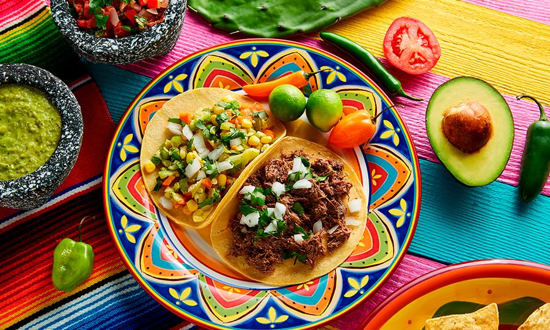

| Inicio | Antojitos populares | Recetas |
Tamales

Los tamales no pueden faltar en la convivencia mexicana. Hay de todo tipo, desde dulces a picantes.
Mole
El mole siempre está presente en la dieta mexicana. Puede servirse de diferentes maneras y hacerse dulces, ligeramente picante o muy picante.
Tacos
 
 Pareciera que hay un puesto de tacos en cada esquina, sin exagerar, más o menos es así. Los tacos siempre acompañan a los mexicanos en las celebraciones.
Molotes
Los molotes en las ferias son la comida rápida mexicana. Usualmente se rellenan con papa y chorizo.
| REGRESAR |